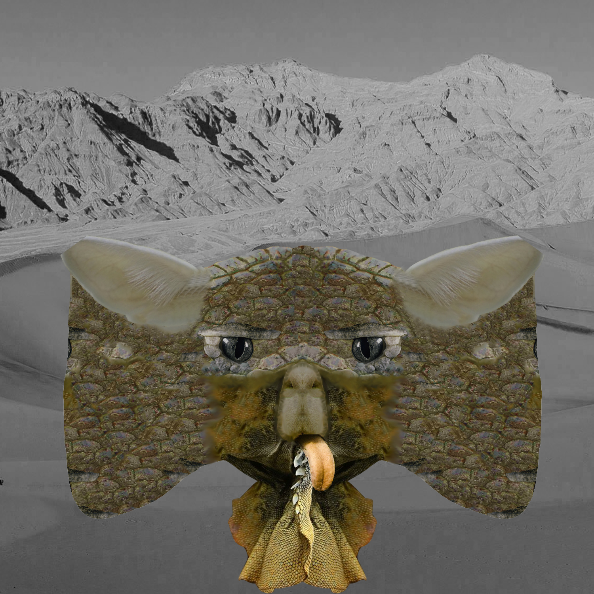
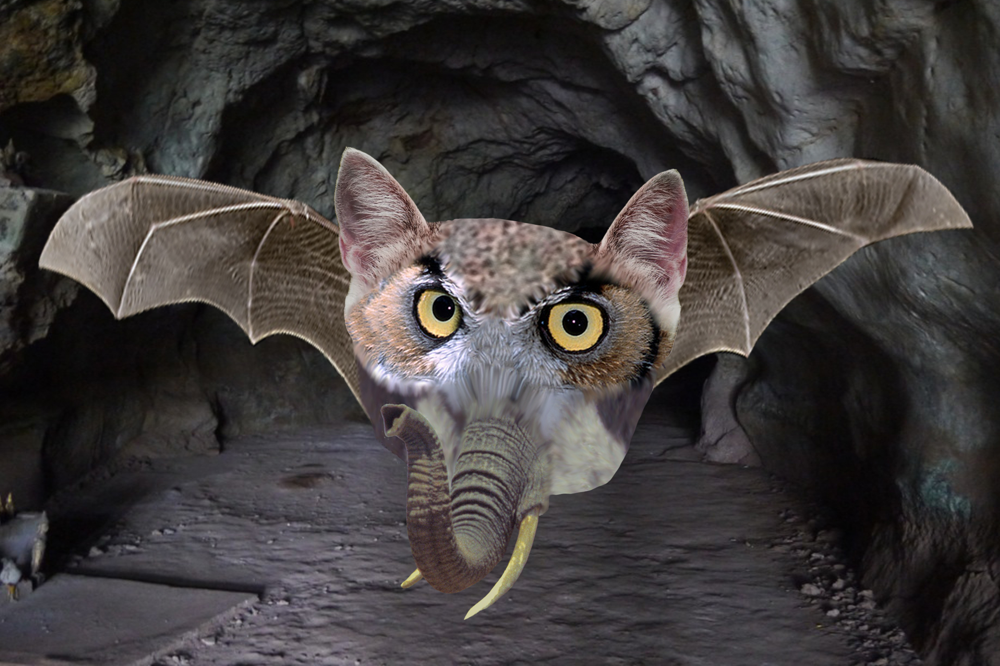

Assignment 7: Animal Masks
Fall 2018
The goal of this assignment was to take parts of animals and combine them to create an animal who would be best adapted to
live in a certain environment or climate.
The first animal took (list animal parts and from what animal, as well as what that better adapts the animal for).

The second animal took (list animal parts and from what animal, as well as what that better adapts the animal for).
